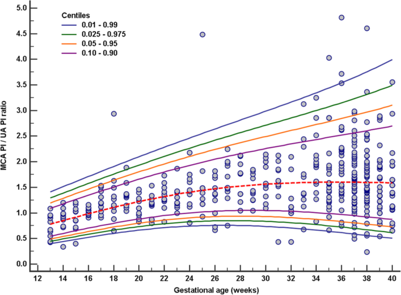

Página 16 · Sofrimento fetal crônico
A escada da deterioração e onde a Terezinha está nela
Ao final desta página você vai saber:
- a sequência da escada da deterioração;
- por que a centralização vem antes de zero/reversa;
- por que a escada não é lei matemática;
- onde a Terezinha está nela e por qual classificação.
A escada da deterioração fetal
A escada da deterioração fetal. Todo o arco crônico cabe numa escada que se desce degrau a degrau: aumenta a resistência da umbilical → o feto prioriza os órgãos nobres (fica menor, com oligodrâmnio) → centralização (coração, cérebro, suprarrenal) → diástole zero → diástole reversa → óbito fetal. Cada degrau é um dos vasos que você aprendeu a ler; juntos, eles medem quão perto do fim o feto está.
Interativo: toque em cada degrau para ver vaso, achado e conduta.
↑ resistência umbilical → prioriza os nobres (menor, oligodrâmnio) → centralização → diástole zero → diástole reversa → óbito. A escada é a sequência mais comum, não uma lei; o marcador mostra onde a Terezinha está — no degrau da centralização.A centralização vem antes de zero/reversa
A centralização vem antes de zero/reversa. Na sequência esperada, a centralização aparece antes da diástole zero ou reversa. É por isso que, com zero ou reversa já presentes, não se pede a cerebral média — presume-se que ela já esteja alterada (a escada já passou por ali). O degrau explica a regra da página anterior sobre a cerebral.
A escada não é matemática — há exceções
A escada não é matemática — há exceções. Um alerta que evita rigidez na prova: a escada é a sequência mais comum, não uma lei — medicina não é exata. Há fetos que centralizam com a umbilical nem tão ruim; existem exceções. Use a escada como mapa, não como trilho.
Interativo: veja a ordem e abra o callout das exceções.
A ordem típica dos degraus é a mais comum, não uma regra fixa: há fetos que centralizam com a umbilical quase normal. E a centralização vem antes de zero/reversa — por isso não se pede a cerebral com zero/reversa.O Tabelão completo
O Tabelão completo. Com as quatro linhas do Doppler preenchidas (uterina, umbilical, cerebral média, ducto venoso) e a linha do volume de líquido, o Tabelão da Vitalidade Fetal fecha o arco crônico. As linhas Cardiotocografia e Perfil biofísico ficam presentes, porém vazias — o próximo instrumento de vigilância as completa.
Tabelão da Vitalidade Fetal
- Volume de líquido (ILA)Soma dos 4 quadrantes · normal 8–18 · < 5 oligodrâmnio · 5–8 diminuído.aguardando
- Artéria uterina (mãe)Circulação materna · incisura ausente após a 2ª metade · alarme: incisura persistente > 24–26 sem (predição).aguardando
- Artéria umbilical (placenta)Baixa resistência < p95 · alarme: > p95 → diástole afunda → zero → reversa. Conduta por corte de idade gestacional.aguardando
- Artéria cerebral média (feto)Alta resistência > p5 · alarme: < p5 = vasodilatação = centralização (nobres: coração, cérebro, suprarrenal).aguardando
- Ducto venoso (coração fetal)Onda A positiva (normal) · alarme: onda A negativa → parto. Antes, sulfato de Mg < 32 sem.aguardando
- CardiotocografiaAvalia o feto durante as contrações — o próximo instrumento de vigilância.→ aula 2
- Perfil biofísicoCombina a cardiotocografia com parâmetros ultrassonográficos — completa a vigilância.→ aula 2
O desfecho: a Terezinha centralizada
O desfecho: a Terezinha centralizada. Voltando à paciente-fio: o laudo dela traz índice de pulsatilidade da umbilical acima do percentil 95 e cerebral média abaixo do percentil 5 → centralização confirmada (vasodilatação cerebral + aumento de resistência umbilical = redistribuição de fluxo). Ela está num degrau alto da escada — centralizou, mas ainda não zerou. ⏱️ O relógio conta.

A CPR (IP-ACM ÷ IP-AU) traduz a centralização num número: a umbilical sobe (> p95) e a cerebral cai (< p5) → a razão despenca. Abaixo da linha do p5 = centralização — a forma matemática do desfecho da paciente-fio.
Atenção à leitura: aqui o eixo é ACM/AU (o recíproco da relação umbílico-cerebral ≥ 1 da página 14). Por isso a centralização é a razão baixa, na zona inferior do gráfico — mesmo fenômeno, caminho recíproco.
Zytoon AA et al. Egyptian J Radiol Nucl Med 2019;50:112 · fonte / licença: CC BY 4.0
A classificação do caso — assimétrico tipo 2
A classificação do caso — assimétrico tipo 2. E fecha-se a classificação aberta lá atrás: o caso é uma restrição provavelmente assimétrica, tipo 2 — surgiu mais adiante na gestação, numa hipertensa crônica. Cabeça poupada, abdome pequeno, placenta insuficiente: a história inteira converge.
Quiz — fixação
Qual a sequência esperada da deterioração fetal no sofrimento crônico?
- Gabarito A. É a ordem da escada.
- B embaralha os degraus — a reversa vem depois da zero, não antes da centralização.
- C inverte tudo: o óbito é o fim, não o começo.
- D a sequência típica passa por zero e reversa antes do óbito — pular direto ignora os degraus intermediários.
Por que, na presença de diástole zero ou reversa, não se solicita o Doppler da cerebral média?
- Gabarito A. A escada explica: centralização precede zero/reversa, então a cerebral já se presume alterada.
- B é tecnicamente insonável; a razão é conceitual, não de imagem.
- C a cerebral se altera antes dos degraus graves, não após o óbito.
- D a cerebral avalia a circulação fetal — a materna é a uterina.